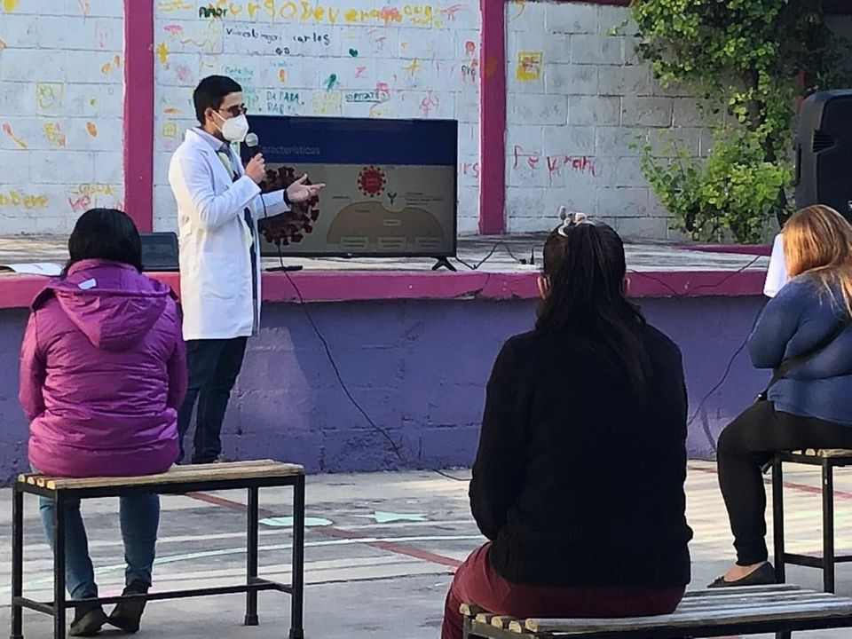
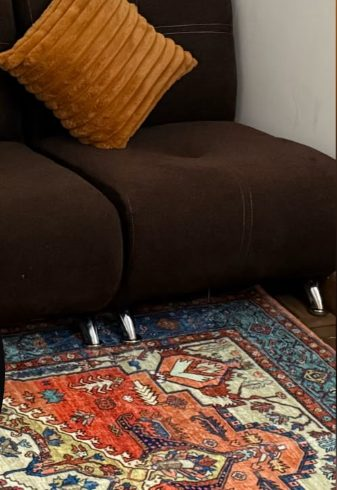

Intervención en crisis
Atención clínica para recuperar estabilidad después de un momento agudo y ordenar los siguientes pasos del tratamiento. Si la crisis está ocurriendo ahora, usa las líneas de ayuda al final de esta página.
Médico psiquiatra · Tlalpan, Pedregal y en línea
Psiquiatría y psiquiatría de enlace
Consulta para adultos, con enfoque en intervención en crisis. Evaluación clínica basada en evidencia y explicaciones claras en cada paso.
Sobre el doctor
«Elegí la psiquiatría porque entendí muy pronto que el sufrimiento psíquico rara vez es evidente, pero siempre es profundo.»
Su práctica parte de una evaluación clínica cuidadosa, sustentada en evidencia científica, y de una escucha sin juicios. El objetivo no es solo disminuir síntomas, sino fortalecer recursos internos y sostener la estabilidad a largo plazo.
Ha acompañado a personas con depresión, ansiedad, trastornos relacionados con trauma, desregulación emocional y dificultades en entornos de alta exigencia.



Qué atiende
Si no ves el tuyo, escribe por WhatsApp: la primera consulta sirve para valorar tu caso.
Su perfil de Doctoralia lista además otros padecimientos. Ver perfil completo.
Atención clínica para recuperar estabilidad después de un momento agudo y ordenar los siguientes pasos del tratamiento. Si la crisis está ocurriendo ahora, usa las líneas de ayuda al final de esta página.
Salud mental de personas que también viven con una enfermedad médica o están en tratamiento con otras especialidades, en diálogo con su equipo médico.
Servicios y precios
Precios para pacientes privados, tomados de su perfil de Doctoralia. Pago en efectivo o transferencia.
Presencial · evaluación clínica inicial y plan de tratamiento.
Presencial · revisión de la evolución y ajuste del tratamiento.
Videoconsulta · primera vez o seguimiento, desde donde estés.
Presencial · información clara sobre el diagnóstico y el tratamiento.
Presencial · consulta médica general.
Presencial · acompañamiento clínico confidencial.
Consultorios
Consulta solo con cita. Pagos en efectivo o transferencia; no se aceptan aseguradoras.
Tlalpan
Lun, mié y jue · horarios de muestra
Pedregal
Mar y vie · horarios de muestra
En línea
Telepsiquiatría desde donde estés: $1,500 MXN. Necesitas conexión estable y un lugar privado para hablar con calma.
Lun a sáb · horarios de muestra
Opiniones
Fragmentos de opiniones verificadas en Doctoralia. Lo más mencionado: dedicación durante la visita, explicaciones detalladas y eficacia del tratamiento.
«El doctor Santiago es súper amable, muy puntual y un profesional muy capacitado… nunca me he sentido juzgado con él.»
«Tiene un trato muy profesional y humano, ha llevado el tratamiento de mi hijo por el último año y medio… Lo recomiendo ampliamente.»
«Se toma el tiempo de explicar el diagnóstico con claridad… conocimientos basados en evidencia científica. Amable, respetuoso y genera un espacio de confianza.»
«Muy dedicado y logra hacer que uno se sienta bien. Excelente explicando.»
Si falta algo, escribe al WhatsApp 222 357 2531.
Es una evaluación clínica: el doctor escucha el motivo de consulta, tu historia y tu contexto, y al final te explica con claridad lo que observa y las opciones de tratamiento. Si hace falta seguimiento, se acuerda en ese momento.
En la agenda eliges día y hora, dejas tus datos de contacto y envías la solicitud por WhatsApp. El consultorio te responde para confirmarla.
Si tienes estudios, recetas o informes médicos previos, llévalos o tenlos a la mano, junto con la lista de medicamentos que tomas. No son obligatorios para agendar.
No. El doctor atiende solo a pacientes privados, con pago en efectivo o transferencia.
Sí. La telepsiquiatría cuesta $1,500 MXN. Busca un lugar privado y una conexión estable para hablar con calma.
Su perfil de Doctoralia indica atención a adultos. Si tienes dudas sobre un caso en particular, pregunta por WhatsApp antes de agendar.
No. Si estás en crisis o tienes pensamientos de hacerte daño, llama a la Línea de la Vida 800 911 2000 (24 h) o a SAPTEL 55 5259 8121; en emergencia, al 911.
Elige día y hora en la agenda, o escribe si prefieres resolver dudas antes.